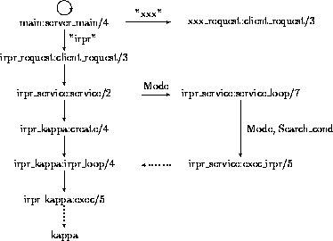

次の図は処理の流れを示す。矢印は述語呼び出しを、破線矢印はメッセージ 送信を表している。 （注意：述語の引数個数は、引数対を2と数えている。）
main:server_main/4はループしており、サービス名が送られて来ると分岐する。
サービス名が"irpr"なら、
irpr_request:client_request/3が、
その他の、例えば"xxx"なら、xxx_request:client_request/3が呼ばれる。
irpr_requestやxxx_requestは、ユーザが定義してサービスの具体的な内容
を記述していくためのモジュールである。
irpr_service:service/2では、名簿管理データベースの操作を指定する変数Modeが 読み込まれ、irpr_service:service_loop/7へ渡される。service_loop/7 では、検索条件Search_condが読み込まれ、Modeと共に irpr_service:exec_irpr/5に渡される。
exec_irpr/5では、Modeをメッセージに変換して、irpr_kappaへ送る。 irpr_kappaでは、irpr_loop/4からexec/5にメッセージが渡ると、 kappaの原始コマンド群へと展開される。
